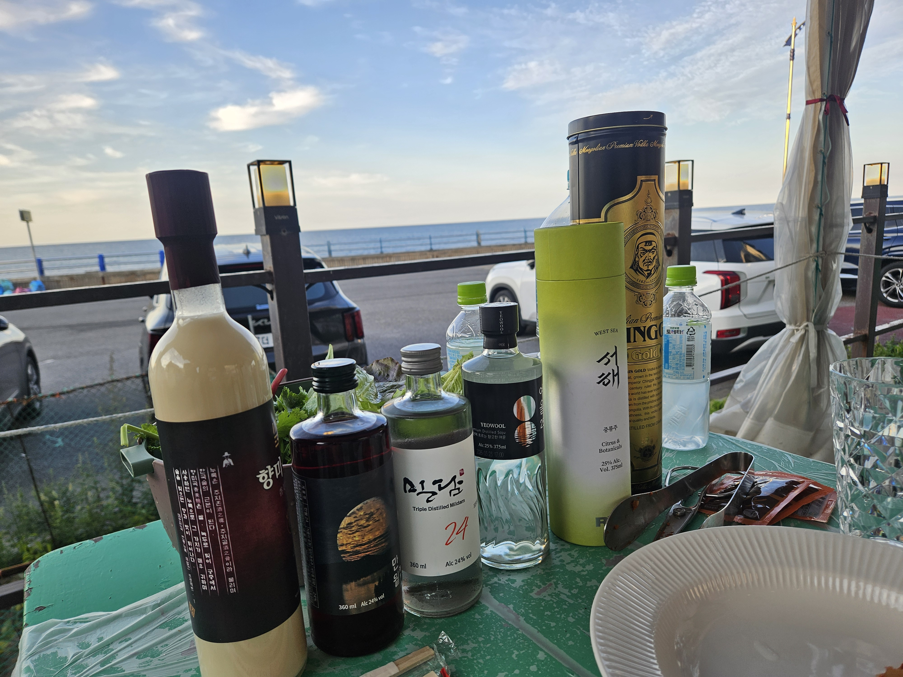

구조
시맨틱 구조로 재설계
div 중심 화면을 header, nav, main, article, aside, footer의 역할이 드러나는 구조로 다시 설계했습니다.
FULL-STACK ENGINEERING PRACTICE
스칼라에 오신 것을 환영합니다.
HTML, CSS, JavaScript를 연결한 개인 포털 형태를 연습하기 위한 메인 화면입니다.
사용 element : <header> <nav> <main>
<section> <aside> <footer>
CSS는 이 HTML 파일 내에서 적용하지 않고, 외부 style.css 파일에서
적용됩니다.
01 / WELCOME
이 사이트는 서로 다른 HTML 문서를 링크로 연결하고, 하나의 CSS와 여러 JavaScript 모듈로 확장한 학습 결과물입니다.
02 / LEARNING LOG
구조
div 중심 화면을 header, nav, main, article, aside, footer의 역할이 드러나는 구조로 다시 설계했습니다.
상호작용
도시 선택과 화면 갱신은 realtimeInfo.js에, Open-Meteo 호출은 weatherAPI.js에 나눠 책임을 구분했습니다.
03 / FEATURED
